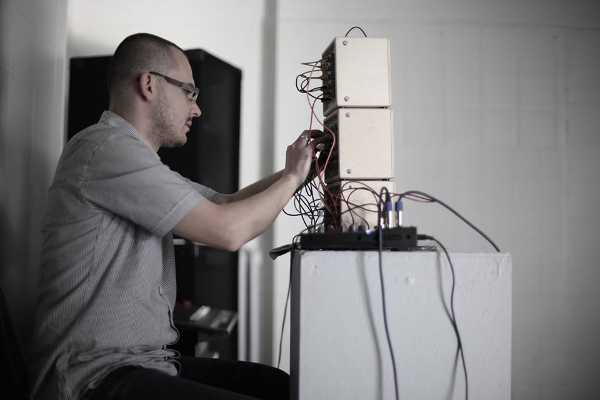

calineczka (ex-aleph) -- an honest drone, live minimal analog synthesis.
releases
- 2025 -- Entia non grata (INNERSPACE Prod., digital)
- 2022 -- Foundations, cracking (NDWICM, DAT 120min)
- 2022 -- ADWOS/ABWOS (Moving Furniture Records' ,,Eliane Tapes'', C86)
- 2022 -- Not Even Useful Fictions (asonu, CDr)
- 2021 -- Thank You For The Music (When The Music's Over) (1834, digital)
- 2021 -- Boban Ristevski & Calineczka Breathe (Important Drone Records, C62)
- 2021 -- Angelo Vicente Jr & Calineczka Life is nothing but a sexually transmitted terminal disease (Steep Gloss, C80)
- 2020 -- Subject With No Object (INNERSPACE Prod., digital)
- 2020 -- kysztymska (Szara Reneta, SD)
- 2020 -- Audience (1834, digital)
- 2019 -- On The Nuclear Physical Stability of the Uranium Minerals (Invisible City Records, C70)
- 2019 -- Music not for Airports (Attenuation Circuit, digital release)
- 2019 -- Pora Deszczów (1834, digital)
- 2018 -- What Is Music And What Should It Be (Important Drone Records, C90)
- 2018 -- Spanish Fissile Fizzles III (digital, self-released)
- 2018 -- The City Behind The Fence (Park70, C57)
- 2018 -- Wydatek neutronów podczas pobudzonej wybuchowo kompresji deuter-tryt w układzie cylindrycznym z warstwą o dużej inercji (Szara Reneta, C60)
- 2017 -- No More Oranges (GoL, digital)
- 2017 -- (untitled 20170721) (CDr, self-released)
- 2017 -- Oranges from the Estate (CDr + digital, self-released)
- 2017 -- Spanish Fissile Fizzles II (digital, self-released)
- 2017 -- three monophonic pieces (2×CDr, self-released)
- 2016 -- Spanish Fissile Fizzles (digital, self-released)
- 2014 -- RDS-1 (live in Gdańsk) (CDr, self-released)
- 2014 -- Żabianka by night good? (digital, self-released)
- 2014 -- Stutonowe demo (CDr, self-released)
appeareances
live performances
- 2024-03-09 -- (Struppiges Konzert mit Calineczka, Cedrik Fermont, Chemiefaserwerk and Roel Meelkop) @ Kulturausbesserungswerk - Leverkusen, DE
- 2020-02-02 -- "RDS-4" (Soundscapism vol.30) @ The Banshee Labyrinth, Edinburgh, UK
- 2020-02-01 -- "RDS-4" (Liminal Haze/Calineczka tour) @ The Soundroom, Gateshead, UK
- 2020-01-31 -- "RDS-5" (Liminal Haze/Calineczka tour) @ AME's Dai Hall, Huddersfield, UK
- 2020-01-30 -- "RDS-4" (Liminal Haze/Calineczka tour) @ Fuel Cafe Bar, Mancherster, UK
- 2019-10-02 -- "RDS-5" (Modelbau/Calineczka) @ Albert van Abbehuis, Eindhoven, NL
- 2019-09-29 -- "RDS-5" (Soundscapism vol.28) @ The Banshee Labyrinth, Edinburgh, UK
- 2019-02-15 -- "RDS-9" (Ruisburo) @ de Ruimte, Amsterdam, NL
- 2019-01-26 -- "RDS-9" (Drone, Noise, No Ambient) @ Kolonia Artystów, Gdańsk, PL
- 2019-01-25 -- "RDS-9" (Noise 01.25) @ Przychodnia Skłot, Warszawa, PL
- 2017-08-25 -- "Totskoye" (Purgist/Calineczka/Psychotronika tour) @ Mózg, Bydgoszcz, PL
- 2017-08-24 -- "RDS-4" (Purgist/Calineczka/Psychotronika tour) @ Kolonia Artystów, Gdańsk, PL
- 2017-08-24 -- "RDS-6" (a 5h composition) @ Kolonia Artystów, Gdańsk, PL
- 2017-08-23 -- "RDS-4" (Purgist/Calineczka/Psychotronika tour) @ Kij, Łódź, PL
- 2017-08-22 -- "RDS-4" (Purgist/Calineczka/Psychotronika tour) @ Ch25, Warszawa, PL
- 2017-08-21 -- "RDS-3" (Purgist/Calineczka/Psychotronika tour) @ Wonle Tory TSA, Bytom, PL
- 2017-08-19 -- "RDS-4" (Purgist/Calineczka/Psychotronika tour) @ Teatr Cinema, Michałowice, PL
- 2017-05-01 -- "RDS-2" (international labour day) @ Kolonia Artystów, Gdańsk, PL
- 2014-05-31 -- "RDS-1" (Streetwaves festival) @ Wrzeszcz, Gdańsk, PL
<< back